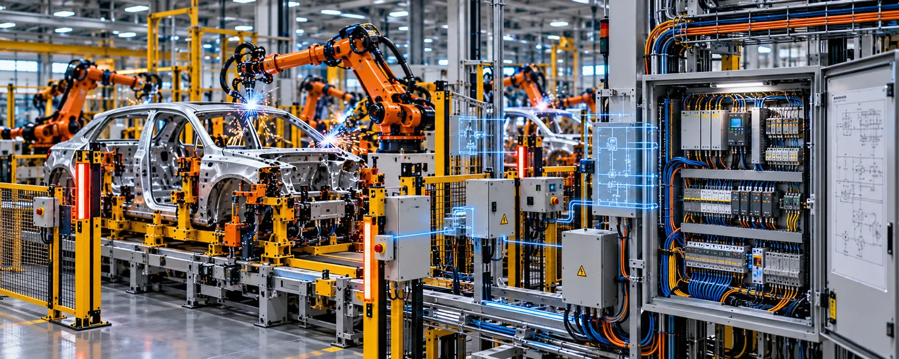

The Assignment
An automotive manufacturing programme required electrical engineering support for an automated welding line, with multiple production stations and equipment requiring coordinated electrical design and documentation.
The objective was to develop the electrical design required to support automated welding operations while ensuring that the line's equipment, controls and associated electrical systems could be integrated effectively within the manufacturing environment.
Our Approach
CS TECH Ai provided electrical engineering and design support for the automotive welding line, covering the development of electrical documentation required for the production equipment and its control systems.
The engagement included:
- Electrical design for automated welding-line equipment
- Development of electrical schematics
- Control-panel electrical design
- Preparation of electrical drawings and documentation
- Electrical integration of production equipment
- Design support for automated manufacturing stations
- Integration of field devices with the control environment
- Preparation and management of electrical engineering documentation
- Design updates based on project and manufacturing requirements
- Engineering support through the development of the welding-line electrical system
The electrical engineering was developed in coordination with the broader manufacturing and automation requirements of the line, providing the documentation and design foundation required for equipment integration and implementation.
Engineering Scope
The programme brought together electrical engineering requirements associated with:
- Automated welding stations
- Production equipment and tooling
- Control panels
- Field devices
- Manufacturing controls
- Electrical schematics and drawings
- Equipment integration